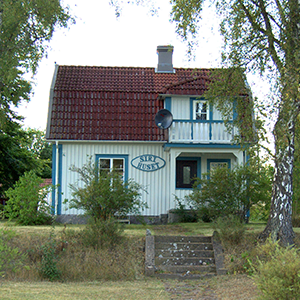

Välkommen i Siri-Huset
In 2009 is de vrijstaande woning door ons gekocht. Het geheel staat op een ruime kavel en er staan een paar schuurtjes achter. De houten woning uit 1932 is grotendeels in oorspronkelijke staat gehouden. Zo heeft de woonkamer nog de originele witte tegelkachel. De ligging van de woning is aan de rand van het dorp Linneryd, aan een doorgaande weg. We hebben de woning naar Siri Lindstrand genoemd, ze was de laatste bewoonster
De woning heeft op de eerste verdieping 2 slaapkamers.
De keuken is inmiddels vernieuwd en heeft een vaatwasser, een combi-oven, een inductiekookplaat en koelkast. We hebben de originele broodbakoven en houtkachel intact gelaten maar dit kan niet meer worden gebruikt! Ook is er een kelder waar je op milieu vriendelijke wijze je eten kunt bewaren. De woonkamer heeft 6 zitplaatsen, ééntje kan in handomdraai als bed worden gebruikt (heeft apart matras binnenin).
Boekenkast met wel 100 boeken plus een paar puzzels en wat spelletjes.
In de hal staat een vries-koelcombinatie en een Miele wasmachine, overdekt drogen kan in de ruime schuur achter het huis.
Campingbedje, kinderstoel, babybadje en aankleedkussen zijn aanwezig.
Vanuit Siri-Huset kun je met de kano het meer op. Er zijn er 2, je mag ze gratis gebruiken. In het huis liggen allerlei brochures, folders en boekjes met tips voor de omgeving. In het Linnerydsjön kun je zwemmen, nabij de camping heb je een strandje en omkleedgelegenheid. Op de camping is er een mogelijkheid een hapje te eten. Boodschappen doen kan op 1 minuut lopen in de kleine buurtsuper.
Elanden kun je hier echt tegenkomen!
Siri-Huset heeft geen internet.
Huisdieren meenemen is niet toegestaan. Het huis is rookvrij, dit willen we graag zo houden.
Wij nodigen u van harte uit tot een bezoek aan Siri-Huset, neem gerust contact met ons op.
We sturen u na boeking (indien gewenst) folders e.d. toe.